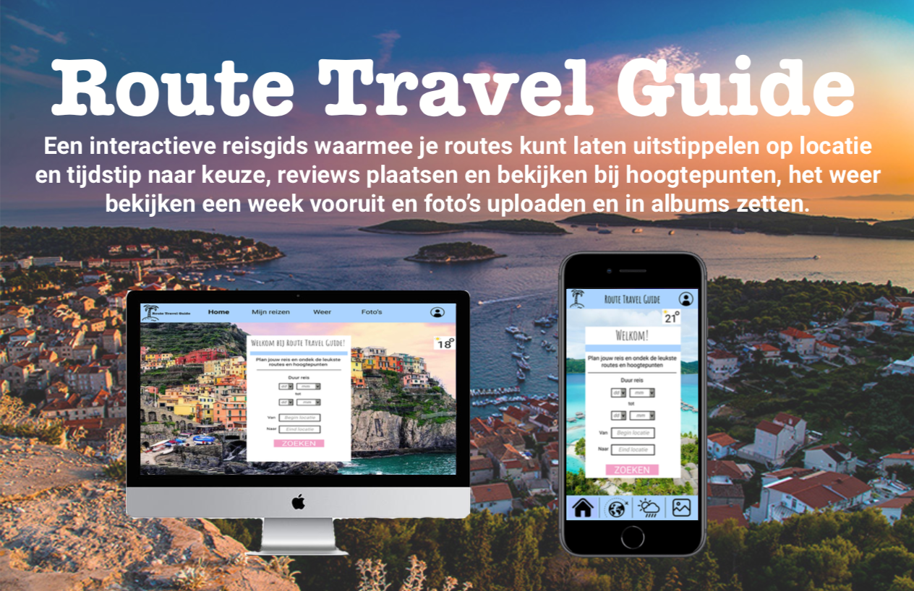

Design rationale - Project web
Situatie
Dit was een opdracht voor het vak Project web in leerjaar 2 CMD. De docent die ik hiervoor had was Kevin van der Wiel. De opdracht was om een online interactieve reisgids te ontwerpen voor verschillende devices. Ik moest een prototype maken die aantoonde wat je voor, tijdens en na de reis met je website kon doen.
Taak
Dit was een individuele opdracht dus ik werkte alleen. Ik heb zelf alles bedacht en ontworpen. Het doel die ik wilde bereiken was om een huisstijl aan te houden en daar op twee verschillende devices een website mee te maken.
Activiteiten
We begonnen met het maken van een Customer Journey Map. Daarna heb ik een content audit gemaakt met API’s. Toen die af was hebben we het Ux ontwerp gemaakt met eerste ideeën. Daarna het interactieve prototype met alle iteraties. En toen het definitieve prototype af was de design rationale om het idee te presenteren.
Resultaat
Ik ben trots op het eindresultaat. Ik heb veel gehad aan de feedback van klasgenoten zodat ik veel iteraties kon maken. Ik heb de meeste feedback gehad over de schermen en weinig over het concept zelf.
Reflectie
Dit voorbeeld is een goed bewijs omdat op deze manier het hele concept te zien is. Met het probleem, de oplossing en wat schermen van het prototype. Als ik het de volgende keer anders zou doen zou ik de schermen groter maken zodat ze duidelijker worden. Dit was ook de feedback die ik heb gekregen.